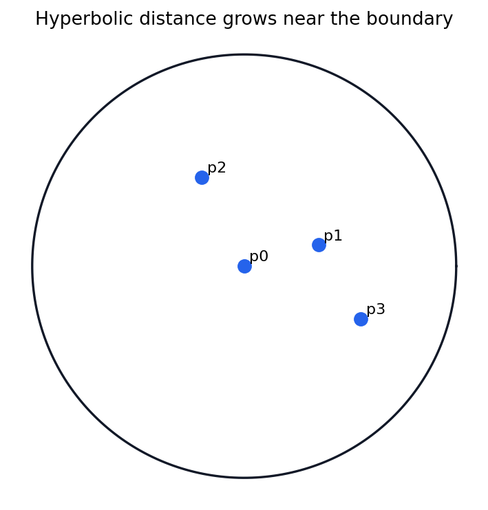

Appendix A: Reference Material
A model shelf for geometric group theory: loop invariants, cohomology ledgers, hyperbolic-plane conventions, and reproducible programming tasks.
Loop Invariants
Fundamental groups turn based loops into algebraic memory.
Cohomology
Compatibility equations separate real obstructions from rewrites.
Hyperbolic Models
The same plane has different visual rules in different windows.
Task Scaffolds
Small experiments need predicted invariants and saved checks.
Fundamental Groups Remember Loop Failure
The fundamental group records based loop classes with multiplication by concatenation:
\( \pi_1(X,x_0) = \{\hbox{based loops}\}/\hbox{homotopy rel endpoints}. \)
- Where is the basepoint used?
- Which loop changes by deformation only?
- Which feature survives as a group element?
Covering Spaces Turn Loops Into Actions
A loop class acts on the fiber by lifting from a chosen sheet and reading the endpoint sheet.
\( [\gamma]\cdot \widetilde{x}_0 = \widetilde{\gamma}(1). \)
Why GGT Cares
- Deck transformations are symmetries over the identity map.
- Actions convert topology into orbit and stabilizer language.
- The line-to-circle cover previews Cayley-graph unwrapping.
Inspection habit: find the fiber, lift the loop, then read the sheet change.
Group Cohomology Is A Quotient Ledger
Cohomology keeps compatible cochains after ignoring pure rewrites:
\( H^n(G;M)=\ker(\delta:C^n\to C^{n+1})/\operatorname{im}(\delta:C^{n-1}\to C^n). \)
The quotient is not a loss of information. It removes coordinate choices so the surviving class records a stable obstruction.
A Cocycle Measures Failed Multiplication
For an extension with a chosen section \(s\), multiplication can pick up a coefficient in the module:
\( s(g)s(h)=f(g,h)s(gh). \)
Reading The Picture
- The blue route multiplies representatives.
- The dashed route asks for the chosen representative of \(gh\).
- The amber region is the algebraic correction term.
Hyperbolic Plane Models Require Conventions
Euclidean closeness to the boundary does not mean hyperbolic closeness. The boundary is an infinite horizon.
\( d_{\mathbb{D}}(p,q)=\operatorname{arcosh}\!\left(1+\frac{2\lVert p-q\rVert^2}{(1-\lVert p\rVert^2)(1-\lVert q\rVert^2)}\right). \)
Disk Geodesics And Distance Checks

The appendix check verifies the first alarms for a broken metric implementation:
- \(d(p_0,p_1)=0.7629909423863022\)
- \(d(p_1,p_0)=0.7629909423863022\)
- symmetry error \(=0\)
- positive-distance check \(=\) true
Inspection Target
Move points toward the boundary in a later lab. The Euclidean movement may look modest, but the hyperbolic distance should grow rapidly.
Programming Tasks Need A Proof-Aware Scaffold
question = "what should survive?"
model = build_finite_window(parameters)
prediction = state_invariant(model)
artifact = render(model)
check = verify(prediction, model)
save(artifact, check)A finite computation can suggest a stable pattern, expose a failure mode, or verify a local identity. It should not pretend to exhaust an infinite group.
Reference Tools Reappear Across The Course
The appendix becomes useful when each borrowed concept arrives with a model, a convention, and a test.
Appendix Exit Checklist
Every reference tool should leave the room with a visible invariant, an explicit model convention, and a reproducible check.